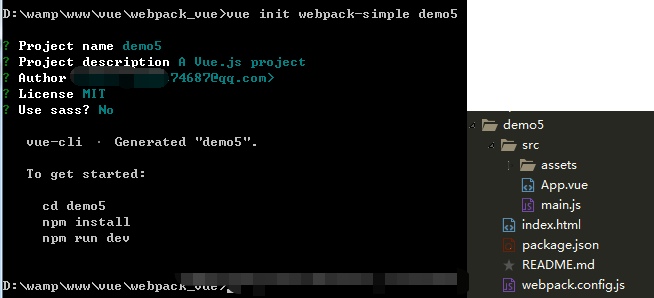
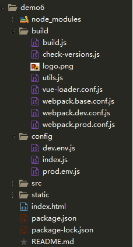
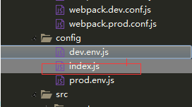
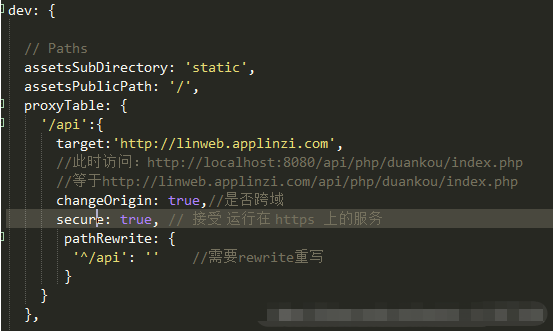
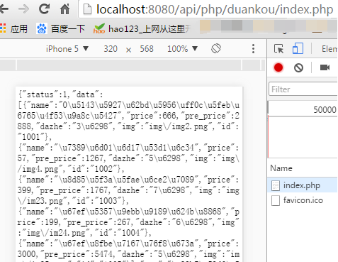

1、安装node.js,在官网下载，直接下一步，完成。nodejs里默认包含npm环境。国内安装包的速度太慢，建议使用cnpm淘宝镜像。
npm install -g cnpm --registry=https://registry.npm.taobao.org
2、vue-cli构建SPA应用
安装vue：npm install vue -g
安装vue-cli：npm install -g vue-cli
使用webpack构建一个简单项目：vue init webpack-simple demo5;此时会让你填写项目名称，描述，作者，版权许可(license),是否使用sass。此时一个vue项目就构建好了。

使用webpack构建一个复杂项目：vue init webpack demo6,此时的项目就会构建的复杂一些。

此时：cd demo6
npm run dev即可运行开发环境
使用webpack跨域代理
使用代理可以使本地环境可以跨域请求其他服务器数据。
在config文件夹下的index.js中
，修改下列代码：

此时，本地开发环境就可以跨域请求其他服务器的数据。
